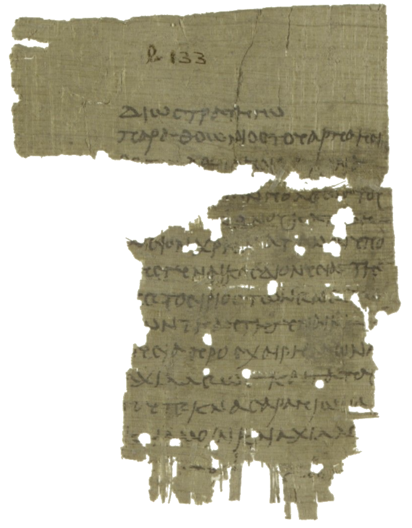

Personalization, Personas, and Forecasting in Value Alignment
James Wedgwood, Pratiksha Thaker, Neil Kale & Virginia Smith
Pluralistic Alignment Workshop, ICML 2026
Apparently similar strategies for conditioning LLM responses to value-driven questions
yield surprisingly different outcomes — with remarkable consistency across model families.
DSPA: Dynamic SAE Steering for Data-Efficient Preference Alignment
James Wedgwood, Aashiq Muhamed, Mona T. Diab & Virginia Smith
Workshop on Representational Alignment (Re-Align), ICLR 2026
Sparse autoencoder (SAE) steering is an attractive alternative to traditional preference optimization
due to its inherent interpretability. We present a prompt-conditional steering technique that is lightweight, effective,
and highly robust to low-data settings.
Automated Concept Discovery for LLM-as-a-Judge Preference Analysis
James Wedgwood, Chhavi Yadav & Virginia Smith
Workshop on Unifying Concept Representation Learning, ICLR 2026 (Oral)
LLM judges are used widely across a multitude of settings. This paper is the first to attempt a systematic, automated
analysis of their preference drivers without reliance on predefined bias taxonomies.

P.CtYBR Inv. 708(A) and (B): A Letter from the Prefect and a Court Summons
James Wedgwood
Zeitschrift für Papyrologie und Epigraphik 219, 2021, pp. 161–166
Several years before I became interested in machine learning, I spent my junior summer of college
in Heidelberg, Germany, studying Ancient Greek papyri; this paper was the result. I've always been fascinated
by ancient documents and hope to someday revisit the field of papyrology from a ML perspective.